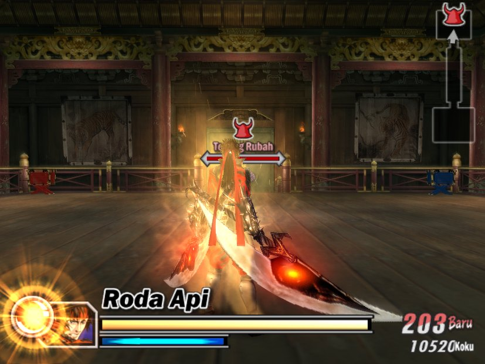
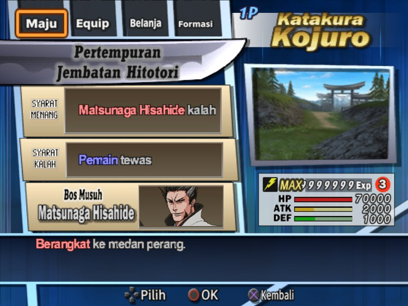
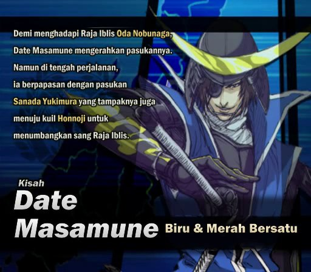
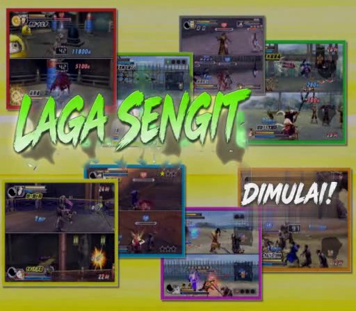

Yang diterjemahkan
Semua terjemahan ada langsung di dalam game. Tidak perlu cheat atau texture pack.

Menu & semua teks
Menu, dialog cerita, 9.227 dialog pertempuran, profil & riwayat karakter, toko & undian Basara, galeri, layar simpan/muat dan setelan. Gaya bicara tiap karakter dipertahankan.

Nama jurus & HUD
Nama jurus memakai romaji resmi, plus spanduk pertempuran, kartu MENANG / TAKLUK TOTAL / TELAH GUGUR, combo DOUBLE! / TRIPLE! / BASARA, dan penghitung misi di HUD.

Persiapan perang
Nama stage, syarat menang & kalah, dan bos musuh di layar persiapan — semua diterjemahkan.

Video pembuka
13 kartu nama karakter beserta pengisi suaranya, plus promo Turnamen Besar, Laga Sengit, dan Penyatuan Negeri.

30 video bab
Teks cerita, nama, kartu judul dan judul penutup di setiap video pembuka bab.

Turnamen
Video promo Turnamen Besar dan Laga Sengit, mode Turnamen Extreme, nama-nama petarung turnamen.